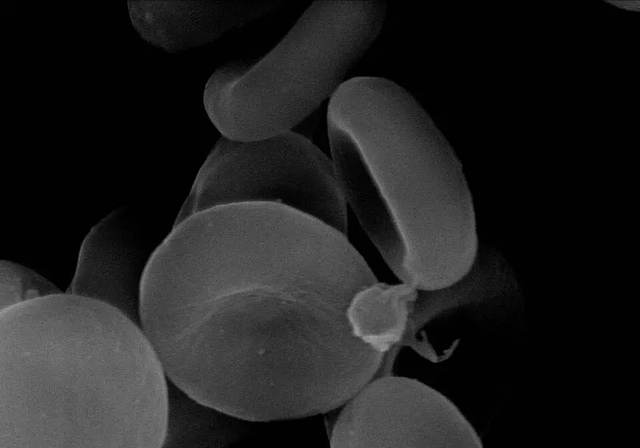
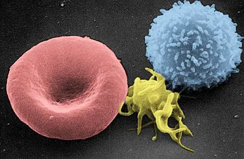

Cambridge Primary Checkpoint · Science 0097 · Stage 6 · Biology
The Heart and Circulatory System
How the heart pumps blood through arteries, capillaries and veins to carry oxygen, nutrients and waste around the body — with pulse-rate investigations and Checkpoint-style practice.
British & IGCSE › Checkpoint 6 › Checkpoint 6 Science — Complete Course
- Describe the human circulatory system: the heart pumps blood through arteries, capillaries and veins (6Bs.01)
- Know that the job of the circulatory system is to transport oxygen, nutrients and waste around the body (6Bs.01)
- Know that many vertebrates have a similar system (6Bs.01)
- Skills used on this page: models and diagrams, pattern seeking, reading line graphs, repeating measurements (6TWSm.02, 6TWSp.02, 6TWSa.05, 6TWSc.04)
Every cell in your body needs a supply of oxygen and nutrients, and every cell makes waste that must be taken away. Cells in your toes are far from your lungs and your stomach, so the body needs a delivery system. That system is the circulatory system: the heart, the blood vessels and the blood.
| Word / phrase | Meaning / use |
|---|---|
| circulatory system | الجهاز الدوري — heart + blood vessels + blood |
| heart | القلب — a muscle that pumps blood |
| blood vessel | وعاء دموي — a tube that carries blood |
| artery (arteries) | شريان (شرايين) — carries blood AWAY from the heart |
| vein | وريد (أوردة) — carries blood back TO the heart |
| capillary (capillaries) | شعيرة دموية — the tiniest blood vessels, next to the cells |
| oxygen | الأكسجين — the gas cells need, collected in the lungs |
| nutrients | العناصر الغذائية — useful substances from digested food |
| waste | الفضلات — substances the body must get rid of, e.g. carbon dioxide |
| pulse | النبض — the beat you feel in an artery each time the heart pumps |
| vertebrate | حيوان فقاري — an animal with a backbone |
The heart: a pump made of muscle
The heart is an organ about the size of your fist. It is in your chest, between your two lungs, protected by your ribs. The heart is made of muscle. When the muscle squeezes, it pumps (pushes) blood out into blood vessels. Then it relaxes and fills with blood again. One squeeze and relax is one heartbeat. When you are resting, your heart beats roughly once every second, all day and all night, for your whole life.
Model: the heart works like a squeezy water bottle. Squeeze it and water is pushed out; let go and it fills again. This model helps us see how a pump works, but it is not exactly like the heart: the heart squeezes by itself, many times a minute, and blood goes round and round instead of spilling out.
Three kinds of blood vessel
| Blood vessel | Which way the blood goes | What it is like |
|---|---|---|
| Artery | Away from the heart to the organs | Thick, stretchy, muscular wall, because the heart pushes blood into arteries very strongly |
| Capillary | Through the organs, between arteries and veins, right next to the cells | Tiny and very narrow; the wall is only one cell thick, so substances pass through it easily |
| Vein | Back to the heart from the organs | Thinner wall and a wider space inside; the blood flows more gently |
Memory trick: Arteries carry blood Away from the heart. Veins bring blood back "in" to the heart.
So the route of blood is always: heart → arteries → capillaries → veins → heart. The blood never leaves the blood vessels; it goes round and round in a circuit — that is why it is called the circulatory system ("circulate" means go round).
The journey of the blood
- The heart pumps blood to the lungs. There, in the capillaries of the lungs, the blood collects oxygen and gets rid of carbon dioxide (you breathe this out).
- The blood, now full of oxygen, goes back to the heart.
- The heart pumps it out through arteries to every part of the body.
- In the capillaries, oxygen and nutrients pass out of the blood into the body's cells. Waste, such as carbon dioxide, passes from the cells into the blood.
- The blood returns to the heart in veins, and the journey starts again.
Colours in diagrams: books draw blood with a lot of oxygen in red and blood with less oxygen in blue. This is only a colour code. Real blood is always red — it is just a darker red when it has less oxygen. Veins look bluish through the skin, but the blood inside them is not blue.
القلب عضلة بتضخ (بتزق) الدم. الدم بيخرج من القلب في الشرايين (Arteries = Away)، وبيوصل لكل خلية عن طريق الشعيرات الدموية (capillaries)، وبيرجع للقلب في الأوردة (veins). وظيفة الدورة الدموية في المنهج: نقل الأكسجين، والعناصر الغذائية، والفضلات.
What does blood carry?
At Stage 6 you need to know three things the circulatory system transports:
| Substance | Picked up from… | Delivered to… |
|---|---|---|
| Oxygen | the lungs (from the air you breathe in) | all body cells — they use it with nutrients to release energy |
| Nutrients (from digested food) | the small intestine (part of the digestive system) | all body cells — for energy and for growing and repairing the body |
| Waste: carbon dioxide | all body cells | the lungs, where it is breathed out |
| Waste: other waste substances | all body cells | the kidneys, which remove it from the body in urine |


Model: the circulatory system is like a delivery service. The heart is the depot that keeps the lorries moving, the blood vessels are the roads (arteries = big roads out of the city, capillaries = narrow streets next to every house, veins = roads back), and the blood is the lorry that drops off oxygen and food and collects rubbish.
Your pulse and exercise
Each time the heart pumps, a surge of blood stretches the arteries. Where an artery is close to the skin — on the inside of your wrist or the side of your neck — you can feel this as your pulse. Your pulse rate is the number of beats in one minute, so it tells you your heart rate.
- Put two fingers (not your thumb — it has its own pulse) gently on the inside of your wrist below the thumb.
- Count the beats for 15 seconds using a stopwatch.
- Multiply by 4 to get beats per minute (15 s × 4 = 60 s).
- Repeat and work out a mean, because it is easy to miss or add a beat.
Why does the pulse go up during exercise? Working muscles need more oxygen and nutrients to release more energy, and they make more waste (carbon dioxide). So the heart beats faster to pump blood around the body more quickly. After exercise the pulse rate slowly falls back to the resting rate.
Pulse investigations can be fair tests ("Does the time spent skipping change the pulse rate?" — change the skipping time, measure the pulse, keep the person and the type of exercise the same) or pattern seeking ("Do people who play sport every day have a lower resting pulse rate?" — you cannot control people's lives, so you collect data from many people and look for a pattern).
Other vertebrates
Vertebrates are animals with a backbone: fish, amphibians, reptiles, birds and mammals. Many vertebrates have a circulatory system similar to ours: a heart that pumps blood through blood vessels to carry oxygen, nutrients and waste.
| Animal | Similar to humans | Small difference |
|---|---|---|
| Dog, camel, cat (mammals) | Heart, arteries, veins, capillaries; blood collects oxygen in the lungs | Very similar to us |
| Pigeon, eagle (birds) | Heart pumps blood through blood vessels; oxygen collected in the lungs | A small bird's heart beats much faster than ours |
| Tilapia, shark (fish) | Heart pumps blood through blood vessels | Blood collects oxygen from water in the gills, not lungs |
Worked examples
Worked example 1 (naming the parts)
(a) Name the organ that pumps blood around the body. [1] (b) Name the blood vessels that carry blood away from the heart. [1] (c) Name the blood vessels where oxygen passes from the blood into the cells. [1]
- (a) the heart
- (b) arteries (A for Away)
- (c) capillaries — their walls are only one cell thick.
Common mistake: writing "veins" for (b). Veins bring blood back to the heart.
Worked example 2 (order of flow)
Complete the order in which blood flows from the heart: heart → ______ → ______ → ______ → heart. [1]
- heart → arteries → capillaries → veins → heart. All three must be in the correct order for the mark.
Worked example 3 (reading the pulse graph)
Use Omar's graph. (a) What is his resting pulse rate? [1] (b) What is his highest pulse rate? [1] (c) Work out how much his pulse rate increased. [1] (d) Explain why his pulse rate increased. [2]
- (a) Before exercise (0–2 min) the line is flat at 80 beats per minute.
- (b) The highest point is at 5 minutes: 140 beats per minute.
- (c) 140 − 80 = 60 beats per minute.
- (d) His muscles needed more oxygen (and nutrients) for energy [1], so his heart pumped faster to carry blood to the muscles more quickly [1]. (Also accept: to remove more carbon dioxide / waste.)
Common mistake: "His heart beats faster because he is tired." That gives no science. Talk about oxygen and the muscles.
Worked example 4 (repeats and mean)
Huda counts her pulse for 15 seconds, three times: 21, 19, 20 beats. (a) Work out the mean number of beats in 15 seconds. [1] (b) Work out her pulse rate in beats per minute. [1]
- (a) (21 + 19 + 20) ÷ 3 = 60 ÷ 3 = 20 beats in 15 seconds.
- (b) 15 seconds × 4 = 1 minute, so 20 × 4 = 80 beats per minute.
Worked example 5 (the journey of oxygen)
Describe how oxygen from the air gets to a muscle in your leg. [3]
- Oxygen moves from the air in the lungs into the blood [1].
- The blood goes to the heart, and the heart pumps it through arteries to the leg [1].
- In the capillaries in the leg muscle, oxygen passes out of the blood into the muscle cells [1].
Worked example 6 (other vertebrates)
A fish has a heart and blood vessels. Give one way a fish's circulatory system is similar to a human's and one way it is different. [2]
- Similar [1]: both have a heart that pumps blood through blood vessels / both carry oxygen, nutrients and waste in the blood.
- Different [1]: a fish's blood collects oxygen in its gills, but a human's blood collects oxygen in the lungs.
- Mixing up arteries and veins. Arteries = Away from the heart; veins = back to the heart.
- Saying blood in veins is blue. It is dark red; blue is only a colour code in diagrams.
- Saying the heart "makes" blood or "cleans" blood. The heart only pumps it.
- Saying the circulatory system carries "air". It carries oxygen (one gas from the air).
- Forgetting waste: blood also carries carbon dioxide to the lungs.
- Saying capillaries have thick walls. Their walls are one cell thick so substances can pass through.
- When working out a pulse rate from 15 seconds, forgetting to multiply by 4.
- Label a simple diagram: heart, artery, vein, capillary, lungs. Read the arrows: which way is the blood going?
- "Draw a line from each blood vessel to its job."
- "Name two substances that blood carries to the cells" — oxygen and nutrients (not "air" or "food" on their own).
- Pulse-rate investigations: read the graph, work out an increase, name the variables, explain why the rate goes up (muscles need more oxygen), suggest why readings should be repeated.
- "Many vertebrates have a similar system" — be ready to name one similarity (heart, blood vessels, blood) for a fish, bird or mammal.
النبض هو إحساس الدم وهو بيتدفع في الشريان مع كل ضربة قلب. لما بنتمرّن، العضلات بتحتاج أكسجين وغذاء أكتر، فالقلب بيدق أسرع عشان يوصّل الدم بسرعة. ولو عدّيت النبض ١٥ ثانية، اضرب في ٤ عشان تعرف عدد النبضات في الدقيقة.
Practice
- The heart is a muscle that pumps blood around the body.
- Arteries carry blood Away from the heart; veins carry it back; capillaries are tiny vessels with walls one cell thick, next to the cells.
- Order: heart → arteries → capillaries → veins → heart.
- Blood transports oxygen (from the lungs), nutrients (from digested food) and waste (such as carbon dioxide, taken to the lungs).
- Exercise → muscles need more oxygen → the heart beats faster → the pulse rate goes up.
- Many vertebrates (mammals, birds, fish…) have a similar system: a heart, blood and blood vessels.
All pages in this course
Start here
- Checkpoint 6 Science: The Test and How to Prepare
- Thinking and Working Scientifically: Investigations, Variables, Tables and Graphs
Biology
- The Heart and Circulatory System
- The Lungs and Respiratory System
- Human Reproductive System and Puberty
- Diseases, Hygiene and the Body's Defences
- Food Chains, Food Webs, Energy and Toxins
Chemistry
- Properties of Substances: Melting and Boiling Points, Gases, Conductors
- Reversible Changes and Dissolving
- Boiling and Evaporation
- Chemical Reactions: Reactants, Products and Evidence
Physics
- Mass, Weight and Gravity
- Force Diagrams and Forces on Moving Objects
- Floating and Sinking
- Light: Reflection and Refraction
- Electric Circuits, Symbols, Series and Parallel
Earth and space
Practice tests